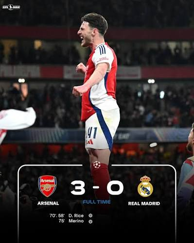

Footy Stats
Hello and Welcome to Footy Stats where you can read and rate your favorite players using a rating system to rate players stats during a game
POM
This month's player of the month is Bukayo Saka after getting 5 goals,5 assists and an average rating of 9.4 in the month of october with only Erling Haaland missing out by getting 2 goals and 3 assists

Latest Games
Today in the UCL Arsenal won against Real Madrid 3-0 after vital goals from Declan Rice and Mikel Merino

Premier League Winners
After all these amazing results,Arsenal are now on the verge to win the Premier League back to back and win their first UCL
Back to top of page